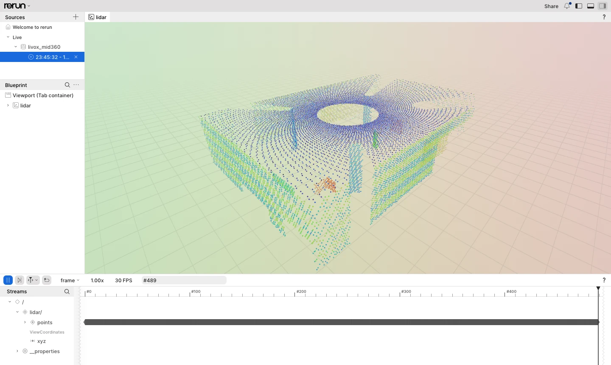

Getting started¶
This guide goes from a fresh Ubuntu 24.04 machine to point clouds. First it uses the bundled LiDAR simulator, so no hardware is needed; then it connects a real Mid-360. The last step uses the library from your own CMake project. Every command below was run in a clean Ubuntu 24.04 container, and the sample output comes from those runs.
- Install the toolchain
- Build and test
- Receive point clouds from the simulator
- Record and replay
- View the point cloud (optional)
- Connect a real Mid-360
- Use the library in your project
1. Install the toolchain¶
sudo apt update
sudo apt install -y build-essential cmake ninja-build catch2 python3 git
Ubuntu 24.04 ships GCC 13 and CMake 3.28, which is enough. GCC 14 (g++-14) and Clang 19 also
work. Python 3 is only needed for the simulator and the tests; the library has no runtime
dependency. The full requirements, including other platforms, are in the
README.
2. Build and test¶
git clone https://github.com/atinfinity/livox-mid360-core.git
cd livox-mid360-core
cmake -S . -B build -G Ninja -DCMAKE_BUILD_TYPE=Release
cmake --build build
ctest --test-dir build --output-on-failure -j4
The summary of the test run should read:
100% tests passed, 0 tests failed out of 253
Many tests start the Python simulator on 127.0.0.1. On macOS a few multi-device tests are
skipped, because only 127.0.0.1 is configured on the loopback interface there.
Besides the library, the build contains:
| Path | What it is |
|---|---|
build/examples/minimal_receive |
Receives frames and IMU samples and prints one line per frame (examples/README.md) |
build/examples/collect_firmware_log |
Saves the LiDAR's own firmware log |
build/tools/cli/livox-mid360-cli |
Records to .lvx2 and replays it (lvx2.md) |
3. Receive point clouds from the simulator¶
tools/livox_mid360_sim.py behaves like a Mid-360 on the wire and uses the same ports. Start
it in one terminal:
python3 tools/livox_mid360_sim.py --bind 127.0.0.1
{"event":"ready","ip":"127.0.0.1","ports":{"discovery":56000,"cmd":56100,"push":56200,"pcl":56300,"imu":56400,"log":56500},"sn":"SIM0000000000001","pid":949}
In a second terminal, receive for three seconds:
build/examples/minimal_receive --lidar-ip 127.0.0.1 --host-ip 127.0.0.1 --seconds 3
Frames and IMU samples go to stdout:
imu t=1790684456272778712 gyro=(0.007,-0.003,0.003) acc=(0.015,-0.011,0.983)
frame 0 points=4992 first=(-13.014,-4.455,-1.884) t=1790684456272724170 dropped=0
frame 1 points=19200 first=(-17.212,-7.751,0.768) t=1790684456299764212 dropped=0
frame 2 points=19200 first=(-1.288,4.721,-0.025) t=1790684456400535254 dropped=0
...
frame 30 points=19200 first=(22.196,36.721,-1.183) t=1790684459201315130 dropped=0
received 31 frames, 721 imu packets
Discovery and statistics go to stderr:
found SIM0000000000001 at 127.0.0.1:56000
stats packets=2310 points=191520 frames=10 imu=315 bad=0 dropped=0 reordered=0
...
How to read it:
- A frame is 100 ms of points: 200 packets of 96 points, 19 200 points. The first one is partial, because sampling starts in the middle of a frame.
tis the frame's base time in nanoseconds. Each point's own time isoffset_nsafter it.- The simulator's points are seeded random positions. They exercise the pipeline but do not show a scene.
Stop the simulator with Ctrl-C. What it supports, and what it assumes where the protocol documentation is silent, is described in simulator.md.
4. Record and replay¶
With the simulator running again, record three seconds to an .lvx2 file:
build/tools/cli/livox-mid360-cli record --out capture.lvx2 \
--lidar-ip 127.0.0.1 --host-ip 127.0.0.1 --duration 3
found SIM0000000000001 at 127.0.0.1:56000
packets=2018 frames=20 bytes=2679506
packets=4023 frames=40 bytes=5421986
packets=6035 frames=60 bytes=8164466
wrote capture.lvx2: packets=6035 frames=61 bytes=8275541 imu_ignored=604
record counts the file's 50 ms frames, and .lvx2 has no IMU packets, so they are counted
as ignored. Replaying the file needs no
LiDAR. It runs the packets through the same frame assembly as a live Device, paced by the
recorded time:
build/tools/cli/livox-mid360-cli replay capture.lvx2
device sn=SIM0000000000001 lidar_id=16777343 type=9 extrinsic=on
frame 0 points=19200 t=4322275627 dropped=0
...
frame 30 points=3360 t=7323228920 dropped=0
packets=6035 frames=31 points=579360 dropped=0 loops=1
Replay options:
--rate 0: replay as fast as possible.--loop: repeat until Ctrl-C.--quiet: print the device and summary lines only, not one line per frame.
The file format and the options are described in lvx2.md.
5. View the point cloud (optional)¶
livox-mid360-rerun shows a live LiDAR or an .lvx2 file in the Rerun
viewer, natively or in a browser:

It is the one part of the repository with a third-party dependency, so it is off by default.
To build it, configure with -DLIVOX_MID360_BUILD_RERUN=ON. The first build fetches the Rerun
C++ SDK and builds Apache Arrow, which takes a few minutes. Building, the viewer and the
browser recipe are described in rerun.md.
6. Connect a real Mid-360¶
Note
The library is developed and tested against the simulator. Verification on real hardware is in progress (#11). Please report anything that behaves differently on your LiDAR.
Network. The Mid-360 talks UDP on a fixed IPv4 address in 192.168.1.0/24. Connect its
Ethernet cable to the host, directly or through a switch. Then give that interface a static
address in the same subnet that no other device uses, for example 192.168.1.5:
ip -br link # find the interface name, e.g. enp3s0
sudo ip addr add 192.168.1.5/24 dev enp3s0 # until the next reboot; use netplan to keep it
Firewall. The host receives on these UDP ports:
| Port | Stream |
|---|---|
| 56101 | command replies |
| 56201 | status push |
| 56301 | point cloud |
| 56401 | IMU |
| 56501 | firmware log |
With ufw enabled, allow UDP from the LiDAR's subnet:
sudo ufw allow from 192.168.1.0/24 proto udp
Receive. Without --lidar-ip, minimal_receive broadcasts a discovery request and uses the
first LiDAR that answers. It prints that LiDAR's serial number and address:
build/examples/minimal_receive --host-ip 192.168.1.5 --seconds 5
found <serial number> at <LiDAR address>:56000
Once you know the address, pass it as --lidar-ip, which also works when several LiDARs share
the network. Device::open points the LiDAR's data streams at --host-ip, so no setting has to
be changed on the LiDAR beforehand. Ctrl-C stops sampling and exits cleanly.
Troubleshooting by exit code of minimal_receive:
| Exit | Message on stderr | Check |
|---|---|---|
| 2 | discovery: no LiDAR answered |
Link and power, host address in 192.168.1.0/24, firewall, --host-ip naming the right interface |
| 2 | an error from open or start_sampling |
The reason is printed. A timeout usually means that the command replies (56101) are blocked |
| 3 | received 0 frames |
Point cloud port 56301 is blocked, or --host-ip is not the address the LiDAR can reach |
The same flags work for livox-mid360-cli record. To record the real LiDAR, use
--host-ip 192.168.1.5 and, once known, --lidar-ip.
7. Use the library in your project¶
Installed package. Install into a prefix:
sudo cmake --install build # /usr/local
sudo ldconfig # so the shared library is found at run time
Then use it from your project with find_package:
cmake_minimum_required(VERSION 3.28)
project(my_app LANGUAGES CXX)
set(CMAKE_CXX_STANDARD 23)
set(CMAKE_CXX_STANDARD_REQUIRED ON)
find_package(livox_mid360_core CONFIG REQUIRED)
add_executable(my_app main.cpp)
target_link_libraries(my_app PRIVATE livox::mid360_core)
#include <iostream>
#include <livox/mid360/mid360.hpp>
int main()
{
std::cout << "livox-mid360-core " << livox::mid360::kVersionString << "\n";
}
cmake -S . -B build -G Ninja # add -DCMAKE_PREFIX_PATH=/your/prefix for another prefix
cmake --build build && build/my_app
livox-mid360-core 0.1.0
The public headers use std::expected, so the target requires C++23 and passes that on to
my_app through livox::mid360_core. Setting the standard in your own project as above keeps
the choice explicit.
FetchContent. Build the library as part of your project instead of installing it. There is no release tag yet, so pin a commit:
include(FetchContent)
FetchContent_Declare(livox_mid360_core
GIT_REPOSITORY https://github.com/atinfinity/livox-mid360-core.git
GIT_TAG <commit hash>)
FetchContent_MakeAvailable(livox_mid360_core)
target_link_libraries(my_app PRIVATE livox::mid360_core)
As a subproject it builds only the library: no tests, examples or tools, and no -Werror
(README).
Next steps¶
- README: Usage: the receive loop in code (
Context→discover→Device::open→on_frame→start_sampling). The runnable version isexamples/minimal_receive.cpp. - api.md: the device API, threading rules, events, configuration keys and reconnection.
- architecture.md: how the layers, threads and data flows fit together.
- simulator.md: driving the simulator from tests (faults, time synchronisation, pcap replay).
- CONTRIBUTING.md: lint, fuzzing, coverage and reproducing CI locally.